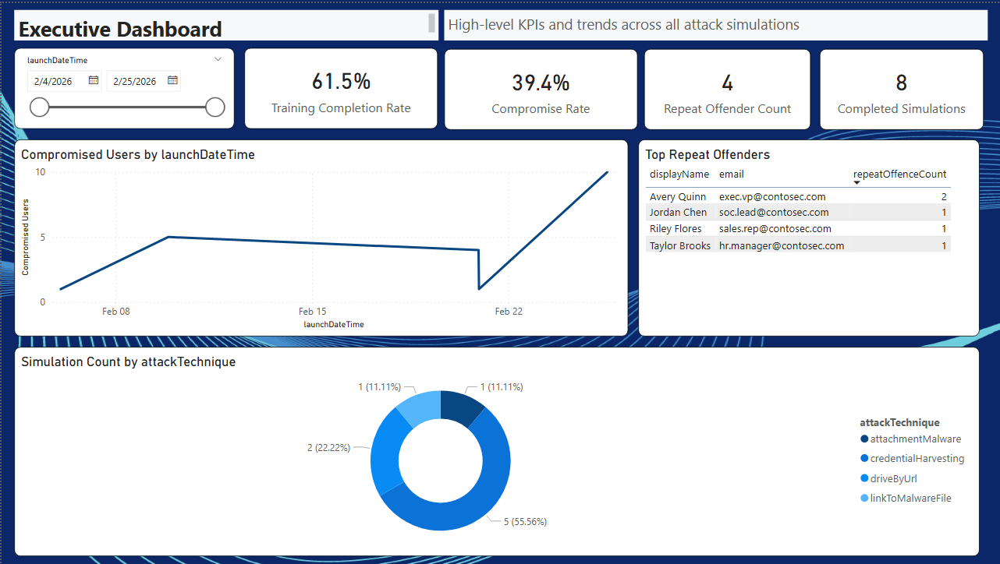
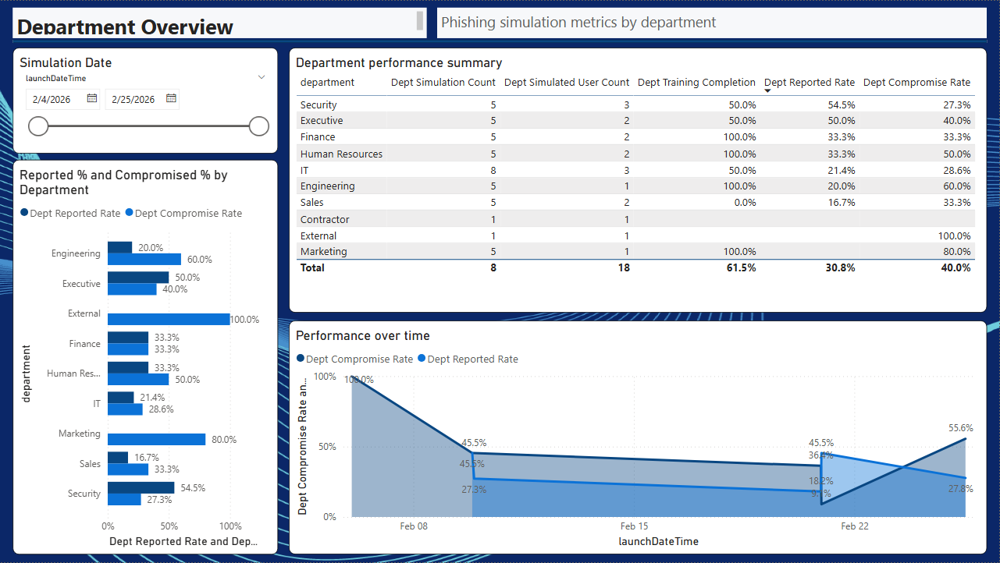
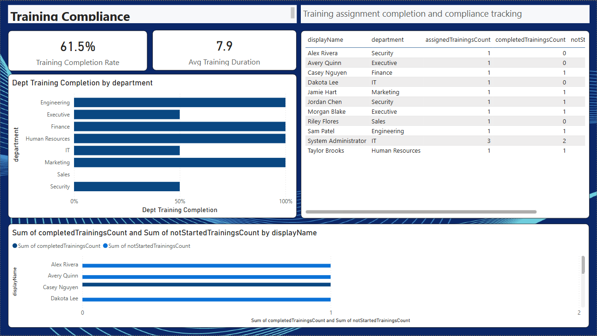

Microsoft Defender for Office 365 includes a solid set of built-in reports for Attack Simulation. The portal gives you simulation coverage, training completion rates, repeat offender tracking, and even a predicted compromise rate based on historical Microsoft 365 data. For day-to-day operations, these reports cover a lot of ground.
Where it gets harder is when you need to take that data somewhere else. Maybe you need to build a consolidated security dashboard that combines attack simulation metrics with other security signals. Maybe your CISO wants phishing resilience trends broken down by department, business unit, or geography over the last twelve months. Or your compliance team needs to correlate training completion with specific simulation campaigns in a format they can audit independently.
The built-in reports weren't designed for that level of customization. The data is there, but it's locked inside the Defender XDR portal. Exporting CSVs works for one-off analysis, but it breaks down when you're running monthly campaigns across thousands of users and need the data to stay current.
This project bridges that gap. It pulls the simulation data out through the Microsoft Graph API and lands it in Power BI, where you can build whatever reporting your organization needs.
What it does
It's an automated pipeline that pulls attack simulation data from the Microsoft Graph API, transforms it, and writes it as Parquet files to Azure Data Lake Storage Gen2. Power BI reads those files on a scheduled refresh. Once it's set up, the data flows without any manual steps.
A timer-triggered Azure Function fires on a schedule (hourly by default). It authenticates through Managed Identity and Key Vault, then paginates through 9 Graph API endpoints with retry logic. The raw JSON gets flattened into tabular records, strings are sanitized, and everything is written as date-partitioned Parquet files. Power BI picks them up on the next refresh.
The whole pipeline runs in under two minutes.
What you get
The Power BI report template includes seven pre-built pages. These were designed by a security engineer, not a data analytics specialist, so treat them as a starting point. The real value is having all the data in Power BI where you can build whatever views, filters, and dashboards fit your organization's needs.







The data
The solution pulls nine tables that cover the full scope of an Attack Simulation Training program:
| Table | API | Description |
|---|---|---|
| repeatOffenders | v1.0 | Users who fell for multiple simulations |
| simulationUserCoverage | v1.0 | Per-user simulation statistics |
| trainingUserCoverage | v1.0 | Per-user training completion |
| simulations | beta | Campaign definitions and metrics |
| simulationUsers | beta | Per-user results for each simulation |
| simulationUserEvents | beta | User events: clicks, credential submissions, reports |
| trainings | beta | Training module definitions |
| payloads | beta | Phishing payload templates |
| users | v1.0 | Entra ID enrichment (department, city, country) |
The first three tables use the stable v1.0 Graph API. The rest use the beta API and are enabled by default through the SYNC_SIMULATIONS setting.
Design decisions
A few things that shaped how this was built:
Fully async. The function uses aiohttp for Graph API calls and the Azure SDK async client for storage writes. This keeps the function fast and avoids blocking on I/O. A full sync across all nine endpoints finishes in under two minutes.
Parquet with explicit schemas. Each table has a PyArrow schema defined in code, with Snappy compression and INT64 timestamps. This gives Power BI clean column types on import without any guessing.
Incremental sync. After the initial full sync, the function uses a 7-day lookback window to only process recent data. This cuts API calls by 70-80% and reduces the risk of hitting Graph API throttling limits.
Security first. The function authenticates with Managed Identity. Secrets live in Key Vault. The infrastructure supports private endpoints and VNet integration. All RBAC assignments follow least-privilege.
Modular storage layer. The ADLS writer is a separate module. If you want to send data to Microsoft Fabric, Azure SQL, or Dataverse instead, you can swap the writer without touching the rest of the pipeline.
Getting started
The repo includes full deployment guides for three methods: GitHub Actions, Azure CLI, and manual portal setup. Here's the short version:
Deploy the infrastructure
Run the included Bicep templates to create the Azure Function, ADLS Gen2, Key Vault, and Application Insights.
Register the app in Entra ID
Create an app registration with AttackSimulation.Read.All and User.Read.All application permissions.
Deploy the function code
Push via GitHub Actions, Azure CLI, or manually. The timer starts syncing data automatically.
Connect Power BI
Open the included report template, point it at your storage account, and refresh.
Tech stack
This is an open-source project released under the MIT license. Contributions, issues, and feature requests are welcome on GitHub.
Get the source code
Full documentation, deployment guides, and the Power BI report template are on GitHub.
View on GitHub